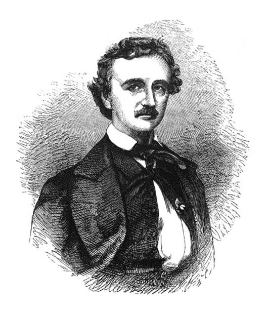

Biography
Edgar Allan Poe (born January 19, 1809, Boston, Massachusetts, U.S.—died October 7, 1849, Baltimore, Maryland) was an American short-story writer, poet, critic, and editor who is famous for his cultivation of mystery and the macabre. His tale “The Murders in the Rue Morgue” (1841) initiated the modern detective story, and the atmosphere in his tales of horror is unrivaled in American fiction. His “The Raven” (1845) numbers among the best-known poems in the national literature.
Themes, technique, and legacy of Edgar Allan Poe
Poe’s work owes much to the concern of Romanticism with the occult and the satanic. It owes much also to his own feverish dreams, to which he applied a rare faculty of shaping plausible fabrics out of impalpable materials. With an air of objectivity and spontaneity, his productions are closely dependent on his own powers of imagination and an elaborate technique. His keen and sound judgment as an appraiser of contemporary literature, his idealism and musical gift as a poet, his dramatic art as a storyteller, considerably appreciated in his lifetime, secured him a prominent place among universally known men of letters.


Famous Tales of Edgar Allan Poe
| Title | Publication Date | First Published In | Genre | Notes |
|---|---|---|---|---|
| The Tell-Tale Heart | 1843 | The Pioneer | Horror | Famous for its unreliable narrator and psychological depth. |
| The Raven | 1845 | The Evening Mirror | Poetry | Although a poem, its haunting tone resonates with his tales. |
| The Fall of the House of Usher | 1839 | Burton's Gentleman's Magazine | Gothic Fiction | Known for its atmosphere and exploration of madness. |
| The Cask of Amontillado | 1846 | Godey's Lady's Book | Horror | A tale of revenge set in catacombs. |
| The Pit and the Pendulum | 1842 | The Gift | Horror | Explores fear and torture during the Spanish Inquisition. |